|


Tudo sobre a nave estelar Enterprise (NCC-1701-D) e toda a
tecnologia que permeia o sculo 24 voc aprende por aqui.

|
Dobra Espacial por Tiago Duarte Se algum fosse considerar um dos componentes principais da nave como seu corao, o sistema de propulso de dobra seria a escolha lgica. O SPD, o mais complexo e energtico elemento da USS Enterprise, a ultima verso do dispositivo que finalmente permitiu humanidade acesso ao espao profundo interestelar, facilitou o contato com outras formas de vida e mudou profundamente todas as civilizaes tecnolgicas da Via Lctea.
1. Teoria e aplicao do campo de dobra Como aqueles que o antecederam, Zefram Cochrane, o cientista normalmente creditado pelo desenvolvimento da fsica de dobra moderna, construiu seu trabalho com base nos ombros de gigantes. A partir da metade do sculo 21, Cochrane, trabalhando com o seu lendrio time de engenheiros, trabalhou para derivar o mecanismo bsico da propulso por distoro do continuum (PDC). Intelectualmente, ele previu o potencial de grandes energias e viagens mais rpidas que a luz, o que significava operao prtica alm do sistema solar. A promessa de eventuais viagens rpidas interestelares motivou a sua equipe a aceitar a tarefa de uma reviso intensa de todas as cincias fsicas. Era esperado que o esforo fosse levar a uma melhor compreenso dos fenmenos conhecidos aplicveis fsica de dobra, alm da possibilidade de idias originais influenciadas por outras disciplinas relacionadas. A busca finalmente levou a um conjunto de equaes complexas, frmulas de materiais, e procedimentos operacionais que descreviam a essncia do vo superluminal. Nas teorias de dobra originais, um, ou no mximo dois campos, criados enormes custos energticos, conseguiam distorcer o contnuo espao-tempo o suficiente para mover uma nave. J em 2061, a equipe de Cochrane conseguiu produzir um prottipo funcional de enormes propores. Descrito como um super propulsor de flutuao, ele finalmente permitiu a um veculo de teste no tripulado alcanar a barreira da luz (c), alternando entre dois estados de velocidade e no ficando em nenhum deles por mais do que tempo de Planck (1,3 x 10^-43 segundo), a menor unidade mensurvel de tempo. Isto teve o resultado de manter a velocidade (antes inatingvel) da luz e ao mesmo tempo evitar os tericos gastos de energia infinitos que seriam necessrios de outra forma. Os primeiros motores de PDC que eram apenas informalmente chamados motores de dobra foram um sucesso, e quase que imediatamente incorporados ao desenho das espao-naves existentes com uma facilidade surpreendente. Embora lentos e ineficientes pelos padres de hoje, estes motores proporcionaram uma reduo substancial nos indesejados efeitos de dilatao de tempo, abrindo caminho para vos de ida e volta na ordem de anos, e no dcadas. Cochrane e seu time eventualmente mudaram-se para a colnia de Alpha Centauri (uma viagem que demorou s quatro anos, graas aos veculos movidos PDC), e continuaram a fazer avanos na fsica de dobra que iriam permitir quebrar de vez a barreira e explorar o misterioso domnio do subespao que estava do outro lado. A chave para a criao de mtodos no-Newtonianos (por exemplo: propulso no dependente da exausto de produtos de uma reao) estava no conceito de agrupar vrias camadas de campo de dobra, cada camada exercendo uma quantidade controlada de fora contra a sua vizinha externa mais prxima. O efeito da fora acumulada impulsiona o veculo para frente e conhecido como manipulao de campo assimtrica e peristltica (MCAP). Bobinas de campo de dobra nas naceles do motor so energizadas em ordem, da frente para trs. A seqncia de disparo determina o nmero de camadas de campo, sendo que um nmero maior de camadas por unidade de tempo necessrio em fatores de dobra maiores. Cada nova camada de campo se expande para longe das naceles, experimentando uma rpida aplicao e perda de fora a distncias variveis das naceles, simultaneamente transferindo energia e se separando das camadas anteriores a velocidades entre 0.5c e 0.9c. Isto est perfeitamente dentro dos limites da fsica tradicional, contornando os limites da Relatividade Geral, Especial e Transformacional. Quando a fora aplicada, a energia irradiada faz a transio necessria para o subespao, resultando em uma aparente reduo de massa no veculo. Isto facilita o deslizamento da espao-nave atravs das camadas seqenciais de campo de dobra. Medida da energia de dobra O cochrane a unidade usada para medir a tenso de um campo subespacial. Cochranes so usados tambm para medir a distoro de campo causada por outros dispositivos de manipulao espacial, incluindo raios tratores, escudos defletores e campos de gravidade artificial. Campos abaixo de dobra 1 so medidos em milicochranes. Um campo subespacial de mil milicochranes ou mais se torna o familiar campo de dobra. A intensidade do campo para cada fator de dobra aumenta geometricamente e uma funo do total dos valores individuas das camadas. Repare que o valor em cochranes para cada fator de dobra corresponde velocidade aparente da nave viajando neste fator. Por exemplo, uma nave viajando em fator de dobra 3 est mantendo um campo de dobra de pelo menos 39 cochranes e est, portanto, viajando a 39 vezes c, a velocidade da luz. Os valores aproximados para os fatores de dobra integrais so:
Os valores reais dependem de condies interestelares, por exemplo, densidade de gs, campos eltricos e magnticos nas diferentes regies da Via Lctea, e flutuaes no domnio do subespao. Naves espaciais normalmente viajam a mltiplos de c, mas sofrem perdas de energia devido a foras qunticas de arrasto, ineficincias e oscilaes de energia. 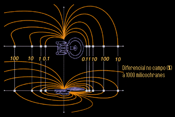 A quantidade de fora necessria para manter um determinado fator de dobra uma funo do valor cochrane do campo de dobra. No entanto, a energia necessria para estabelecer tal campo muito maior, e chamada de ponto mximo de transio. Assim que a transio acontece, a quantidade de energia necessria para manter um dado fator de dobra diminuda. Estudos indicam que no so esperados desenvolvimentos em novos materiais que possam produzir um rendimento maior em fatores de dobra elevados. Campos de dobra excedendo um fator integral que no possuem a energia para cruzar o ponto de transio so chamados de fatores de dobra fracionais. Viajar em um fator de dobra fracional pode ser bem mais rpido do que viajar no fator de dobra integral inferior, mas por perodos extensos, muito mais eficiente simplesmente aumentar a velocidade para o prximo fator de dobra integral. 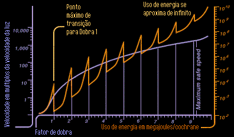 Este grfico demonstra com clareza o ponto mximo de transio.
Limites tericos O Limite de Eugene permite distoro de dobra aumentar assintticamente, aproximando-se, mas nunca alcanando um valor correspondente dobra 10. Ao aproximar-se de 10, a fora necessria para manter o campo cresce geometricamente, enquanto que a eficincia das j mencionadas bobinas de dobra cai dramaticamente. A aplicao e perda de fora nas camadas de campo de dobra crescem at freqncias inatingveis, excedendo no apenas as capacidades do sistema de controle de vo, mas mais importante, o limite imposto pelo tempo de Planck. Mesmo que fosse possvel gastar a terica energia infinita necessria, um objeto viajando em dobra 10 estaria viajando infinitamente rpido, ocupando todos os pontos do universo simultaneamente.
Sistema de propulso de dobra Da maneira em que est instalado na classe Galaxy, o sistema de propulso de dobra consiste de trs partes principais: o conjunto de reao matria/antimatria, dutos de conduo de fora e naceles do motor de dobra. O sistema fornece energia para a sua aplicao primria, impulsionar a USS Enterprise pelo espao, assim como sua aplicao secundria: alimentar sistemas essenciais de alta potncia tais como escudos defletores, bancos phaser, raio trator, defletor de navegao e ncleos do computador. As especificaes originais para o sistema, transmitidas para as docas de Utopia Planitia em Marte, em 6 de julho de 2343 requeriam um hardware capaz de sustentar uma velocidade de cruzeiro de dobra 5 at a exausto do combustvel, uma velocidade mxima de cruzeiro de dobra 7, e uma velocidade mxima de dobra 9,3 por doze horas. Esses marcos tericos foram definidos em simulaes, baseadas numa massa total do veculo de 6,5 milhes de toneladas mtricas. No entanto, nos seis meses seguintes (bem antes do desenho da estrutura estar concludo), a Frota Estelar reavaliou os requisitos gerais para a classe Galaxy, baseada numa combinao de fatores. As principais influncias foram: (1) mudanas nas condies polticas entre membros da Federao, (2) previses da inteligncia que descreviam um hardware superior de possveis inimigos, e (3) um nmero crescente de programas cientficos que poderiam se beneficiar de uma nave com performance superior. Simulaes supervisionadas por membros das equipes de desenho estrutural, de sistemas e de propulso resultaram em especificaes revisadas que foram enviadas para os projetistas em Utopia Planitia em 24 de dezembro de 2344. Estas especificaes requeriam que a classe Galaxy mantivesse uma velocidade normal de cruzeiro de dobra 6 at a exausto de combustvel, uma velocidade mxima de cruzeiro de dobra 9,2 e uma velocidade mxima de dobra 9,6 por doze horas. O total de massa estimada para o veculo foi reduzido atravs de melhoramentos em materiais e rearranjos internos para 4,96 milhes de toneladas mtricas. Assim que os desenhos principais foram estabelecidos, componentes do prottipo do motor foram fabricados, usando elementos de veculos anteriores como pontos de referncia. Modelos computadorizados dos principais sistemas foram reunidos num modelo nico para testar caractersticas tericas de performance. O primeiro modelo completo foi testado em UP em 16 de abril de 2356, e foi demonstrado para a Frota Estelar dois dias depois. Com o avano dos estudos de performance, prottipos do hardware foram fabricados. Falhas de material assombraram o desenvolvimento inicial do ncleo do sistema, a cmara de reao, que tem que conter a furiosa reao de matria/antimatria. Estas dificuldades foram eliminadas com a introduo de hexafluoreto de cobalto ao revestimento interno da cmara, o que provou ser uma maneira eficiente de reforar os campos magnticos do ncleo. De maneira parecida, problemas com materiais atrasaram a construo das naceles do motor de dobra. O elemento chave do motor de dobra, as bobinas de verterio-cortenide 947/952, que convertem a energia do ncleo em campos de dobra, no puderam ser manufaturadas dentro das especificaes de vo no formato e densidade necessrios durante toda a primeira metade do processo de construo dos prottipos. Estes problemas foram resolvidos atravs de ajustes no longo perodo de resfriamento das bobinas durante a sua produo nas fornalhas. Notavelmente, o trabalho nos dutos de conduo de fora entre o ncleo de dobra e as naceles procedeu sem incidentes. Anlises detalhadas dos prottipos dos dutos revelaram cedo que eles iriam agentar com facilidade as cargas estruturais e eletrodinmicas projetadas, j que sua funo bsica foi pouco alterada durante o ltimo sculo. Assim que a estrutura estava suficientemente completa para permiti-lo, o motor foi instalado. Os dutos de conduo de fora, que haviam sido montados dentro dos suportes das naceles durante a construo da estrutura, aguardavam a conexo das naceles e do ncleo do motor. Em 5 de maio de 2356 a nave prottipo NX-70637, a ainda sem nome USS Galaxy, existiu pela primeira vez como uma nave capaz de vo.
2. Conjunto de reao matria/antimatria Assim como o sistema de propulso de dobra o corao da USS Enterprise, o conjunto de reao matria/antimatria (CRM/A) o corao do sistema de propulso de dobra. O CRM/A muitas vezes chamado de reator de dobra, ncleo do motor de dobra, ou ncleo do motor principal. A energia produzida dentro do ncleo dividida entre a sua funo primaria (a propulso da nave) e os principais sistemas de bordo. O CRM/A o sistema principal de gerao de energia, devido ao fato de uma reao de matria/antimatria produzir 10^6 vezes mais energia do que uma reao de fuso comum, como a empregada no sistema de impulso. O CRM/A consiste de quatro subsistemas: injetores de reagentes, segmentos de constrio magntica, cmara de reao matria/antimatria e dutos de conduo de fora. 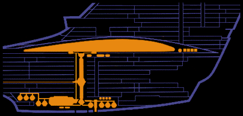 A distribuio dos tanques de matria e antimatria e a CRM-A.
Injetores de reagentes Os injetores de reagentes preparam e alimentam o ncleo com fluxos de matria e antimatria controlados com a mxima preciso. O injetor de matria reagente (IMR) recebe deutrio super resfriado do tanque primrio de deutrio (TPD) na parte superior da seo de engenharia e o aquece parcialmente numa reao contnua de fuso de gs. Ele ento impulsiona os gases resultantes atravs de uma srie de bocais ajustveis at o primeiro segmento de constrio magntica. O IMR consiste de uma estrutura cnica de 5,2 por 6,3 metros, construda com woznio carbomolibdnio reforado por disperso. Vinte e cinco atenuadores de impacto o conectam ao TPD e aos pontos principais de suporte da estrutura da nave no deck 30, mantendo 98% de isolamento trmico do restante da seo de engenharia. Para todo efeito, todo o SPD flutua dentro do casco para poder agentar at 3 vezes o estresse terico de operao. Dentro do IMR esto seis injetores redundantes multi-alimentados, cada injetor consistindo de duas vlvulas de entrada de deutrio, condicionadores de combustvel, pr-aquecedores de fuso, bloco de compensao magntica, duto de transferncia, combinador de gs, cabea do bocal e o hardware de controle necessrio. Deutrio no tratado passa pela vlvula de entrada a taxas de fluxo controladas e passa aos condicionadores, onde calor removido trazendo o deutrio para logo acima do ponto de transio para o estado slido. Micro-esferas se formam, so pr-aquecidas por fuso magntica, e enviadas para o combinador de gs, onde o produto gasoso ionizado est agora a 106K. Os bocais ento focam, alinham e propelem o fluxo de gs para dentro dos segmentos de constrio. No caso de falha de um dos bocais, o combinador de gs iria continuar a alimentar os bocais restantes, que se dilatariam para acomodar o aumento no suprimento de combustvel. Cada bocal mede 102 x 175 cm e constitudo de frmio-cobre-yttrio 2343. No lado oposto do CRM/A est o injetor de antimatria reagente (IAR). O desenho interno e operao do IAR so bem diferentes do IMR, devido natureza perigosa da antimatria usada. Cada passo na manipulao e injeo do anti-hidrognio deve ser executado com campos magnticos para isolar o combustvel da estrutura da nave. Em alguns aspectos o IAR um dispositivo mais simples, que requer menos componentes mveis. No entanto, o perigo nato manipulao da antimatria requer uma confiabilidade inabalvel do mecanismo. O IAR tem a mesma estrutura bsica, atenuadores de impacto e suportes que o IMR, com adaptaes para os dutos de combustvel de suspenso magntica. A estrutura contm separadores de fluxo de antimatria, que dividem o anti-hidrognio recebido em pacotes menores, mais fceis de manipular, para mand-los aos segmentos de constrio magntica inferiores. Cada separador leva a uma vlvula injetora, e cada vlvula abre-se em ciclos, em resposta a sinais de controle do computador. A abertura das vlvulas pode seguir seqncias complexas, resultantes de equaes igualmente complexas que controlam a presso da reao, temperatura, e energia produzida desejada.
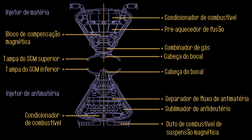 Os injetores de matria e antimatria so parecidos apenas por fora.
Segmentos de constrio magntica Os segmentos de constrio magntica (SCM) superior e inferior constituem a massa central do ncleo. Esses componentes suportam a estrutura da cmara de reao matria/antimatria, fornecendo um ambiente com presso apropriada para a operao do ncleo, e alinham os fluxos de matria e antimatria para o encontro dentro da cmara de reao. O SCM superior mede 18 metros de comprimento, e a unidade inferior mede 12 metros. Ambos tem 2,5 metros de dimetro. Um segmento padro constitudo de oito conjuntos de atenuadores de presso, uma parede toroidal de presso, doze conjuntos de bobinas constritoras, sistemas de alimentao de fora e hardware de controle necessrio. As bobinas constritoras so feitas de cobalto-lantandeo-boronite de matriz forada de alta intensidade, com trinta e seis elementos ativos configurados para prover uma alta intensidade de campo somente dentro do ambiente de presso e permitindo apenas o mnimo (ou nenhum) vazamento para a Engenharia. As torides do ambiente pressurizado so camadas alternantes de ferracita carbontica formada por deposio de vapor e borosilicato de alumnio transparente. Os componentes de tenso vertical so vigas de tritnio e cortenide, e so soldadas estrutura pelo mtodo de transio de fase durante a montagem da estrutura do veculo para produzir uma estrutura unificada. Todos os pontos de suporte do motor tm dutos dedicados para receber energia do campo de integridade estrutural durante operao normal. A camada externa transparente serve como um medidor visvel da performance do motor, j que ftons secundrios inofensivos so emitidos das camadas interiores, criando um brilho azul visvel. A ao peristltica e o nvel de energia podem ser facilmente vistos pelo Chefe Engenheiro e/ou pessoal de manuteno. 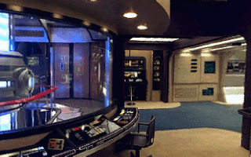 A estao de trabalho do engenheiro-chefe o permite monitorar a CRM-A.
Assim que os fluxos de matria e antimatria so liberados de seus respectivos bocais, as bobinas constritoras comprimem ambos no eixo Y e adicionam uma velocidade de 200 a 300 m/s. Isto garante o alinhamento e energia de coliso apropriada para que ambos atinjam o alvo dentro da CRM/A, no exato centro da cmara. precisamente neste ponto que a reao mediada pelo cristal de diltio.
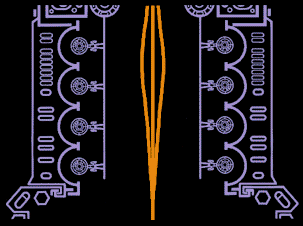 O fluxo de matria ou antimatria e conduzido magneticamente atravs dos SCM.
Cmara de reao matria/antimatria A cmara de reao matria/antimatria (CRM/A) consiste de duas cavidades idnticas, em forma de sino, que contm e redirecionam a reao primria. A cmara mede 2,3 metros de altura e 2,5 metros de dimetro. composta de doze camadas de hfnio 6 e carbontrio fundido com exclio, soldado por transio de fase sob uma presso de 31.000 quilopascais. As trs camadas externas so reforadas com arkendio acrosente para uma proteo de at 10 vezes a presso normal. Todos os outros pontos de sustentao e ligao com sistemas de transferncia de energia recebem o mesmo reforo. A banda equatorial da cmara contm o local de armazenamento para a estrutura de articulao do cristal de diltio (EACD). Uma escotilha protegida fornece acesso a EACD para a substituio e ajustes do cristal. A EACD consiste de um bero com isolamento eletromagntico capaz de armazenar at 1200 cm^3 de cristal de diltio, alm de dois conjuntos redundantes de suportes e orientao triaxiais. O cristal tem que ser instalado com at seis graus de liberdade, para atingir os ngulos e profundidade necessrios para a mediao da reao. Conectando a banda equatorial metade superior e inferior esto vinte e quatro pinos estruturais. Estes pinos so de moliferranite-hfnio 8 e so reforados contra tenso, compresso, toro e cisalhamento, alm de fazer parte do campo de integridade estrutural do motor. Por todo o centro da banda equatorial correm duas camadas de tritnio borocarbonato difuso transparente para uma monitorao visual da energia da reao.
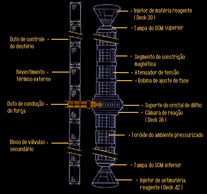 A CRM-A fica no centro do conjunto que tem a altura de um prdio de 12 andares. O papel do Diltio O elemento chave no uso eficiente das reaes de M/A o cristal de diltio. Este o nico material conhecido pela Federao que no reagente a antimatria quando exposto a um campo eletromagntico (EM) de alta freqncia na faixa dos megawatt, o tornando poroso ao anti-hidrognio. O diltio permite ao anti-hidrognio passar diretamente atravs da sua estrutura cristalina sem de fato toc-la, devido ao efeito de dnamo criado pelos tomos de ferro adicionados. A forma longa do nome do cristal a frmula de matriz forada 2<5>6 diltio 2<:>1 dialosilicato 1:9:1 heptoferranide. Esta estrutura atmica altamente complexa baseada em formas mais simples descobertas em camadas geolgicas naturais em certos sistemas planetrios. Foi considerada por muitos anos irreproduzvel por mtodos conhecidos ou previstos de deposio de vapor, at que avanos em epitaxia e antieuttica nucleares permitiram a formao de diltio sintetizado puro para uso em espao-naves e usinas de fora, atravs de tcnicas de composio de theta-matrizes utilizando bombardeamento por radiao gamma.
Gerao de fora pela CRM/A A seqncia de ignio do motor, conforme controlado pelo CPCP a seguinte: 1. A partir de uma condio fria, a temperatura e presso totais do sistema so trazidas at 2.500.000 K, usando uma combinao de energia do sistema de eletroplasma (SEP) e do IMR, e um aperto dos constritores magnticos superiores. 2. As primeiras quantidades mnimas de antimatria so injetadas de baixo, pelo IAR. O SCM inferior espreme o fluxo de antimatria e ajusta a sua mira para que coincida com a do IMR acima, fazendo com que ambos os fluxos caiam nas mesmas coordenadas XYZ dentro da CRM/A. O maior raio da reao de 9,3 cm e o menor 2,1 cm. O dimetro do fluxo no SCM superior e inferior pode variar, dependendo do ajuste de potncia. Existem dois modos de reao distintos. O primeiro envolve a gerao de altos nveis de energia canalizados para o sistema de eletroplasma, muito similar a uma reao de fuso normal, para uso das funes da nave enquanto em impulso. Na EACD, os suportes de orientao posicionam o diltio de tal maneira que duas faces fiquem paralelas aos fluxos de matria/antimatria, coincidindo com as coordenadas do ncleo XYZ 0,0,125, onde 125 o raio da seo de reao. A reao mediada pelo diltio, forando o limite superior das freqncias EM resultantes para baixo, at abaixo de 10^20 hertz, e o limite inferior para cima, at acima de 10^12 hertz. O segundo modo faz uso completo da habilidade do diltio de causar uma suspenso parcial da reao, criando as freqncias de pulso necessrias para serem enviadas para as naceles do motor de dobra. Neste modo, as coordenadas XYZ so controladas pelos suportes de orientao da EADC e colocam o exato ponto de coliso 20 angstrons acima da face superior do cristal. A freqncia desejada continuamente ajustada para alcanar os fatores de dobra desejados. Independente do modo empregado, o efeito de aniquilao acontece no ponto central da cmara. A razo M/A estabilizada em 25:1 e o motor considerado em ponto morto. 3. A presso do motor lentamente trazida ate 72.000 quilopascais, aproximadamente 715 vezes a presso atmosfrica, e a temperatura normal de operao no ponto de reao 2x10^12 K. Os bocais do IMR e IAR so abertos para permitir que mais reagentes entrem na cmara. A razo ajustada para 10:1 para gerao de energia. Esta tambm a razo base para atingir dobra 1. As propores relativas de matria e antimatria mudam enquanto os fatores sobem at dobra 8, onde a razo se torna 1:1. Fatores de dobra maiores requerem maiores quantidades de reagentes, mas a razo continua inalterada Outros modos de ignio esto disponveis, dependendo das necessidades da situao.
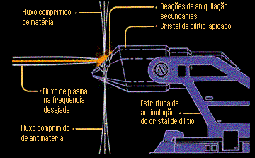 O verdadeiro corao da Enterprise.
Dutos de conduo de fora Assim que todo o sistema est ativado, o plasma energtico gerado dividido em dois fluxos em ngulos quase retos linha central da nave. Os dutos de conduo de fora (DCF) so magneticamente parecidos com os segmentos de constrio, na caracterstica de manter o plasma restrito ao centro de cada canal, e o impulsionam peristlticamente em direo s naceles de dobra, onde as bobinas de campo de dobra (BCD) utilizam a energia para propulso. Os DCF saem da engenharia para trs, onde interceptam os suportes do motor de dobra. Cada duto fabricado de seis camadas alternantes de tritnio e borosilicato de alumnio transparente, que so soldados juntos por transio de fase para formar uma nica estrutura resistente presso. As ligaes com a cmara de reao so juntas que contm explosivos de corte, e podem se separar do ncleo em 0,08 segundos, no caso da ejeo do mesmo. As juntas so instaladas durante a fabricao e no podem ser reutilizadas.
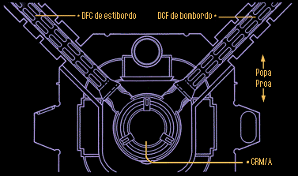 Os dutos de transferncia de fora levam a energia at as naceles.
Tomadas do sistema de eletroplasma (SEP) esto localizadas em trs pontos ao longo do DCF, a 5, 10 e 20 metros de distncia das juntas explosivas. Tomadas do SEP esto disponveis em trs tipos, dependendo de sua aplicao. As do Tipo I tem uma capacidade de fluxo de 0,1 para sistemas de alta potncia. As do Tipo II tem capacidade de 0,01 para dispositivos experimentais e as do Tipo III aceitam sadas de baixa potncia para aplicaes de converso de energia.
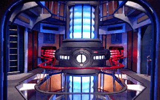 A CRM-A e os dois DCFs levando o plasma at as naceles.
3. Naceles de campo de dobra O plasma energtico gerado pela CRM/A transportado pelos dutos de conduo de fora e chega rapidamente ao seu destino final, as naceles do motor de dobra. Aqui onde o verdadeiro trabalho de propulso executado. Cada nacele consiste em diversas partes, incluindo as bobinas de campo de dobra (BCD), sistema de injeo de plasma (SIP), sistema de separao de emergncia (SSE) e escotilhas de manuteno. A estrutura bsica das naceles similar quela do resto da nave. A estrutura de tritnio e durnio combinada com suportes longitudinais, e coberta com o mesmo material da cobertura do casco: placas de 2,5 metros de tritnio soldadas por radiao gamma. A adio de trs camadas internas de cobalto cortenide fornece proteo adicional contra os altos nveis de estresse sofridos quando em dobra, especialmente nos pontos de ligao aos pilares de suporte da nacele. Toda a estrutura e revestimento das naceles tm dutos triplamente redundantes para a alimentao do campo de integridade estrutural (CIE) e sistema de compensao inercial (SCI). Conectados ao interior da estrutura esto cilindros atenuadores de impacto e suportes de isolamento trmico, para o sistema de injeo de plasma. O sistema de separao de emergncia seria usado caso uma falha catastrfica ocorresse no SIP, ou se uma nacele fosse danificada em combate ou outra situao onde no pudesse se manter conectada ao pilar de suporte. Dez travas estruturais explosivas podem ser detonadas, impulsionando as naceles para longe a 30m/s. Durante a manuteno em bases estelares e vo lento subluminar, e com a CRM/A desativada, as escotilhas de manuteno permitem que qualquer nave auxiliar equipada com o sistema padro de atracamento se conecte, dando equipe de engenharia acesso rpido ao interior da nacele. Visitas normais de monitoramento so feitas por dentro da nave, utilizando um turboelevador para uma nica pessoa, que corre por dentro do pilar de suporte. 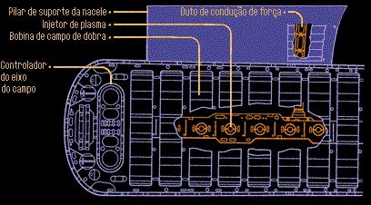 Naceles de campo de dobra.
Sistema de injeo de plasma No final de cada DCF est o sistema de injeo de plasma, uma srie de dezoito vlvulas magnticas injetoras ligadas aos controladores do motor de dobra. H um injetor para cada bobina de dobra, e os injetores podem ser disparados em seqncias variveis, dependendo da funo do vo de dobra que est sendo executada. Os injetores so construdos de arknio-duranide e ferrocarbonite mono-cristal, com torides de constrio magntica de nalgtio-serrite. Comandos de entrada e sinais de controle so manipulados por doze links redundantes rede de dados tica (RDO). Pequenas diferenas de tempo existem durante qualquer seqncia de ignio das bobinas ou mudana no fator de dobra, devido distncia fsica entre o computador e o motor. Estas diferenas so rapidamente corrigidas por rotinas de software que conseguem prever a sincronizao da operao, resultando num controle dos motores quase que instantneo. O ciclo de abertura e fechamento dos injetores varivel, de 25ns at 50ns. Cada abertura de um injetor, expe a sua bobina correspondente a um fluxo de energia, que deve ser convertida em um campo de dobra. Em fatores de dobra de 1 a 4, os injetores disparam em baixa freqncia, entre 30 e 40 Hz, e permanecem abertos por perodos curtos de tempo, entre 25 e 30 ns. Em fatores de dobra de 5 a 7, a freqncia de disparo aumenta de 40 para 50 Hz, e os injetores permanecem abertos por mais tempo, de 30 a 40 ns. Em fatores de dobra de 8 at 9,9, a freqncia de disparo dos injetores sobe para 50 Hz, mas h um atraso no ciclo de abertura dos injetores, devido a limitaes causadas por cargas magnticas residuais nas vlvulas, a possibilidade de conflitos com a freqncia da energia da CRM/A e a confiabilidade do sistema de comandos e controle. O maior ciclo seguro de tempo, usado em fatores altos de dobra geralmente considerado ser 53 ns. Bobinas de campo de dobra O campo de energia necessrio para impulsionar a USS Enterprise criado pelas bobinas de campo de dobra e assistido pela forma especfica do casco da nave. As bobinas geram um intenso campo multi-camadas que cerca a nave, e a manipulao da forma deste campo que produz o efeito de propulso atravs e alm da velocidade da luz, c. As bobinas em si so torides divididas no meio, posicionadas dentro das naceles. Cada metade mede 9,5 x 43 metros e construda de um ncleo de tungstnio-cobalto-magnsio de alta densidade para reforo estrutural, e inserido numa cpsula de vertrio cortenide de alta densidade. Um par completo mede 21 x 43 metros, com uma massa de 34.375 toneladas mtricas. Os dois conjuntos de dezoito bobinas completas cada tm uma massa de 1,23 x 10^6 toneladas mtricas, chegando a quase 25% da massa total do veculo. O processo de formao das bobinas, como foi discutido no item 1, provou-se ser difcil de repetir com preciso durante as primeiras fases do projeto da classe Galaxy. Melhoramentos em materiais e procedimentos levaram a cpias mais precisas para uso em espao-naves, embora a instalao de bobinas ainda siga um processo de comparao, onde as mais parecidas so instaladas em pares. Durante a troca das bobinas em uma doca ou base-estelar, a diferena mxima de idade entre a bobina mais velha e a mais nova no pode ser maior do que seis meses.
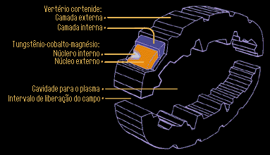 Uma das bobinas de campo de dobra.
Quando energizado, o vertrio cortenide dentro de uma bobina causa uma mudana na freqncia da energia carregada pelo plasma para dentro do domnio do subespao. Os pacotes qunticos de energia de campo subespacial se formam a aproximadamente 1/3 da distncia entre a superfcie interna da bobina e a externa, enquanto o vertrio cortenide causa mudanas na geometria do espao na escala Planck de 3,9 x 10^-33 cm. A energia convertida do campo sai pela superfcie externa da bobina e irradia-se para longe da nacele. Uma certa quantidade de energia do campo se recombina na linha central da bobina, e aparece como uma emisso de luz visvel.
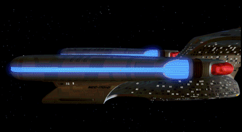 A energia no convertida em campo de dobra escapa como luz visvel.
Propulso de dobra O efeito de propulso conseguido por um nmero de fatores trabalhando em conjunto. Primeiro, a formao do campo controlvel no sentido horizontal, da frente para trs. Como os injetores de plasma disparam em seqncia, as camadas de campo de dobra se formam de acordo com a freqncia de pulso do plasma, e empurram umas contra as outras como j foi discutido. A fora acumulada das camadas de campo reduz a massa aparente do veculo e induz a velocidade desejada. O ponto crtico de transio acontece quando uma espao-nave parece, para um observador externo, estar viajando mais rpido do que c. Quando a energia total do campo alcana 1000 milicochranes, a nave parece cruzar a barreira de c em menos do que tempo de Planck, 1,3 x 10^-43 segundos, e a fsica de dobra garante que a nave nunca vai viajar a exatamente c. As trs primeiras bobinas em cada nacele operam com uma pequena diferena na freqncia para reforar o campo frente do coletor Bussard e envolver toda a seo disco. Isto ajuda a criar a assimetria de campo necessria para impulsionar a nave para frente. Segundo, um par de naceles usado para criar dois campos balanceados, que interagem para manobrar o veculo. Em 2269, testes experimentais com uma nica nacele e com mais de duas naceles forneceram uma rpida confirmao de que dois o nmero ideal de naceles do ponto de vista da gerao de energia e controle do veculo. Manobras na espao-nave so efetuadas pela introduo de diferenas controladas na temporizao de cada conjunto de bobinas, modificando desta maneira a geometria total do campo de dobra e a direo da nave. Movimentos de guinada (plano XZ) so controlados mais facilmente desta maneira. Mudanas na atitude do veculo so conseguidas atravs de uma combinao de diferenas na temporizao e concentrao do plasma. Terceiro, a forma do casco da nave facilita o deslizamento para dobra e fornece um vetor para correo geomtrica. A seo disco, que mantm a sua forma originada da idia de sua utilizao como um veculo para pouso de emergncia, ajuda a moldar a parte anterior do campo atravs do uso do casco, uma elipse plana de 55, que provou ser de grande eficincia nos picos de transio. O corte inferior da seo de engenharia permite vrios graus de aderncia do campo, prevenindo desta maneira o acmulo de camadas em um ponto qualquer. Durante a separao da seo disco e operao independente da seo de engenharia, o software interativo do controlador do campo de dobra ajusta a geometria do campo para compensar pela diferena no formato da nave. No evento de perda acidental de uma ou mesmo ambas as naceles enquanto em dobra, a nave iria se desfazer linearmente, devido ao fato de que diferentes partes da estrutura estariam viajando a diferentes fatores de dobra.
4. Armazenamento e transferncia de antimatria
Desde a confirmao de sua existncia na dcada de 1930, o conceito de uma forma de matria com a mesma massa, mas cargas e spin diferentes despertou em cientistas e engenheiros a idia de um possvel meio para produzir quantidades de energia sem precedentes, e usar esta energia para impulsionar grandes veculos pelo espao. A teoria cosmolgica afirma que todas as partes constituintes do universo foram criadas em pares, isto , uma partcula de matria e outra de antimatria. O porqu da tendncia em direo matria na nossa vizinhana galctica , at hoje, um assunto para discusses acaloradas. No entanto, todas as antipartculas bsicas j foram sintetizadas e esto disponveis para uso experimental e operacional. Quando, por exemplo, um eltron e um antieltron (ou psitron) esto em grande proximidade, eles se aniquilam mutuamente, produzindo raios gamma energticos. Outros pares de partculas/antipartculas se aniquilam resultando em diferentes combinaes de partculas subatmicas e energia. Os resultados tericos apresentados pelo deutrio, um istopo do hidrognio e sua contra-parte antimatria, eram de especial interesse para os engenheiros de espao-naves. No entanto, os problemas encontrados ao longo do caminho para a obteno de um motor funcional de M/A eram to grandes quanto os possveis resultados eram espetaculares. A antimatria, a partir do momento de sua criao, no podia nem ser contida e nem tocar nenhuma partcula de matria. Diversos esquemas foram propostos para conter o anti-hidrognio com campos magnticos e este ainda o mtodo mais aceito. Grandes quantidades de anti-hidrognio, na sua forma lquida no tratada, apresentavam grandes riscos no caso de falha de uma parte da conteno magntica, mas nos ltimos cinqenta anos, geradores supercondutores de campos mais confiveis e outras medidas garantiram um maior grau de segurana a bordo de naves da Frota. Na maneira como utilizado a bordo da USS Enterprise, antimatria primeiramente gerada nas grandes estaes de abastecimento da Frota pela combinao de vrios dispositivos de reverso de carga por fuso, que transformam fluxos de prtons e nutrons em antideuterons, que so unidos em um acelerador de psitrons para produzir anti-hidrognio (ou mais precisamente antideutrio). Mesmo com a utilizao de energia solar no processo, a perda energtica neste mtodo ainda de 24%, mas esta penalidade considerada aceitvel pela Frota Estelar, considerando as vantagens da explorao interestelar. A antimatria mantida em conteno por dutos magnticos e tanques divididos em diversos compartimentos enquanto a bordo da estao. As espao-naves mais antigas eram construdas com grandes tanques tambm, embora este mtodo tenha provado ser menos desejvel do ponto de vista da segurana, numa nave que constantemente sujeita a grandes estresses. Durante um abastecimento normal, antimatria passada atravs da escotilha de abastecimento, uma sonda circular de 1,75 metro de dimetro equipada com doze pontos de travamento fsico e uma ris magntica. Ao redor da escotilha de abastecimento no deck 42 esto trinta tanques de armazenamento, cada um medindo 4 x 8 x 4 metros e construdo de polidurnio, com uma camada interna de qunio frrico. Cada tanque contm um volume mximo de 100 m^3 de antimatria, levando o total dos trinta tanques da nave para 3000 m^3, o suficiente para o perodo normal de uma misso de trs anos. Cada tanque conectado por dutos protegidos a uma srie de vlvulas de distribuio, controladores de fluxo e entradas de alimentao ao sistema de eletroplasma (SEP). Em condies de abastecimento rpido, reservadas para situaes de emergncia, todo o conjunto de tanques de armazenamento de antimatria (CTAA) pode ser removido e substitudo em menos de uma hora.
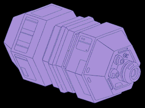 Um tanque de armazenamento de antimatria.
No caso de perda da conteno magntica, este mesmo conjunto pode ser ejetado por detonadores de microfuso a uma velocidade de 40 m/s, impulsionando-o para longe da nave antes que o campo decaia e a antimatria tenha a chance de reagir com as paredes dos tanques. Embora grupos pequenos de tanques possam ser substitudos em condies normais, o mtodo de bombeamento magntico ainda o preferido. A antimatria, mesmo contida nos tanques de armazenamento, no pode ser movida por teletransporte sem que sejam feitas grandes modificaes no buffer de padro, dutos de transferncia e emissores de transporte devido natureza altamente voltil da antimatria. A exceo a esta regra o transporte de pequenas quantidades de antimatria armazenadas em dispositivos de conteno magntica aprovados, para o uso por equipes cientficas e de engenharia. O reabastecimento enquanto se est no espao interestelar possvel com o uso de uma nave-tanqueiro da Frota. Transferncias por tanqueiro sofrem riscos considerveis, no tanto por problemas de hardware, mas por que antimatria refinada uma comodidade valiosa, e vulnervel captura (ou mesmo destruio) por foras inimigas enquanto em trnsito. A escolta de cruzadores procedimento normal em todos os movimentos de tanqueiros da Frota.
5. Suprimento de combustvel para o sistema de propulso de dobra O suprimento de combustvel para o sistema de propulso de dobra (SPD) contido dentro do tanque primrio de deutrio (TPD) na seo de engenharia. O TPD, que alimenta tambm o SPI (sistema de propulso de impulso), normalmente carregado com deutrio no tratado a uma temperatura de -259 C, ou 13,8K. O TPD construdo com cortnio 2378 de matriz forada e ao inoxidvel, com um revestimento de espuma de silicone-cobre-duranite soldada por radiao gamma num padro de camadas paralelas/perpendiculares. Cortes para as entradas de abastecimento, tomadas de presso e sensores so feitas com cortadores phaser de preciso. H um total de quatro vlvulas de alimentao de combustvel do TPD para o injetor de matria reagente, oito dutos retro-alimentados para os tanques auxiliares na seo disco, e quatro linhas de alimentao para o motor de impulso principal. O volume interno total, que dividido em compartimentos para reduzir possveis perdas devido a danos estruturais, de 63.200 m^3. Da mesma maneira que o volume de antimatria carregado para uma misso tpica, uma carga completa de deutrio prevista para durar aproximadamente trs anos. Como em qualquer tanque, esperado que uma certa porcentagem de molculas de deutrio migrem atravs das paredes do tanque com o decorrer do tempo. A taxa medida de vazamento do TPD de menos de ,00002 kg/dia. Valores proporcionais se aplicam aos tanques auxiliares. Deutrio no-tratado criado pelo fracionamento eletro-centrfugo padro de uma variedade de materiais (incluindo gua do mar, neve e gelo dos satlites dos planetas exteriores e ncleos de cometas) e o resfriamento dos lquidos resultantes. Cada um ir criar propores diferentes de deutrio e materiais residuais, mas todos podem ser utilizados pelo mesmo hardware da Frota. Naves-tanqueiro de deutrio so bem mais comuns do que suas contra-partes de antimatria, e podem fornecer reagentes em situaes de emergncia com apenas alguns dias de demora. Duas escotilhas de carregamento de deutrio esto localizadas ao longo da espinha estrutural da seo de engenharia, em direo parte traseira do tanque. A estrutura da escotilha de carregamento contm conexes estruturais (para fazer um atracamento firme com a base estelar ou doca de manuteno), dutos para o alvio de presso durante o abastecimento e entrada e sada de material, e conexes da RDO para os computadores da base estelar. 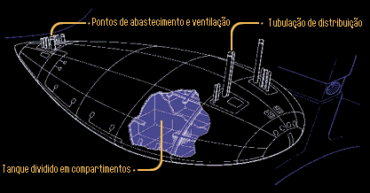 O tanque primrio de deuterio o responsvel pela corcunda da Enterprise.
6. Reabastecimento de combustvel atravs do coletor Bussard No caso de um tanqueiro de deutrio no poder alcanar uma nave Galaxy, existe a possibilidade de coletar matria de baixa qualidade do meio interestelar atravs de uma srie de bobinas magnticas especializadas de alta energia conhecidas normalmente por coletor Bussard. Devendo o seu nome ao fsico e matemtico do sculo vinte Robert W. Bussard, o coletor emana uma radiao ionizante direcional e um campo magntico para atrair e comprimir o tnue gs encontrado na Via Lctea. Deste gs, que possui uma densidade mdia de um tomo por centmetro cbico, podem ser destiladas pequenas quantidades de deutrio para o reabastecimento de contingncia do suprimento de matria. Em altas velocidades relativsticas, a acumulao deste gs aprecivel, embora esta tcnica no seja recomendada por longos perodos de tempo por causa dos efeitos de dilatao temporal. No entanto, em velocidades de dobra, um suprimento estendido de emergncia pode ser gerado. Enquanto suprimentos de antimatria no podem ser recuperados do espao da mesma maneira, quantidades mnimas podem ser geradas a bordo por um dispositivo de reverso de carga quntica. um fato aceito de que naves em perigo iro continuar a gastar seus suprimentos de energia; no entanto, sistemas como este foram adicionados para garantir pelo menos uma pequena chance adicional de sobrevivncia. O coletor Bussard pode ser encontrado na ponta dianteira de cada nacele de dobra. Ele consiste de trs conjuntos principais: o emissor de raio ionizante (ERI), o gerador/coletor de campo magntico (G/CCM), e um fracionador de ciclo contnuo (FCC). A cobertura curva da ponta da nacele, a maior estrutura de molde nico na espao-nave, formada de poliduranide reforado e transparente para o pequeno espectro de energias ionizantes produzidas pelo emissor. a funo do emissor aplicar uma carga s partculas neutras no espao, para a captao pelo campo magntico. Em velocidades de dobra, a energia ionizante gerada em freqncias de subespao para que o raio possa se projetar frente da nave, decair para o seu estado normal e produzir o efeito desejado. 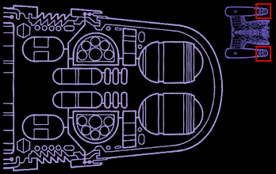 O interior do coletor Bussard.
Atrs e suportando a cobertura da nacele est o G/CCM, um conjunto compacto de seis bobinas desenhadas para produzir uma rede magntica frente da nave e puxar as partculas carregadas em direo s grades de coleta. Estas bobinas so construdas de cobalto-lantandio-boronite e obtm sua alimentao ou do sistema de eletroplasma ou diretamente dos dutos de transferncia de fora. Em velocidades subluz, as bobinas atraem as partculas adiante da nave normalmente. No entanto, em velocidades de dobra, a operao das bobinas revertida para reduzir a velocidade das partculas. Este sistema trabalha em grande afinidade com o defletor principal de navegao. Durante sua operao normal, o papel do defletor prevenir o contato de qualquer material interestelar com a nave. No entanto, pequenos buracos so manipulados no campo pelo defletor e pelo G/CCM para permitir a passagem de quantidades teis de gs rarefeito. Colocado dentro do G/CCM est o FCC, que separa continuamente o gs que chega em diferentes categorias distintas de qualidade, consideradas queimveis dentro do motor de dobra. Os gases separados so comprimidos e alimentados sob presso para os tanques de armazenamento na seo de engenharia. 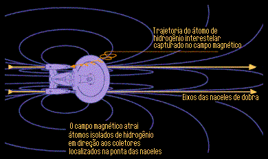 O coletor Bussard em funcionamento.
7. Gerao de antimatria a bordo Como mencionado anteriormente, existe na classe Galaxy a habilidade de gerar quantidades relativamente pequenas de antimatria durante possveis situaes de emergncia. O processo incrivelmente intenso do ponto de vista energtico e pode no ser vantajoso sob todas as condies de operao. Mas como o coletor Bussard, o gerador de antimatria pode fornecer suprimentos crticos de combustvel quando eles so mais necessrios. O gerador de antimatria fica no deck 42, cercado por outros elementos do SPD. Ele consiste de duas peas chave: o admissor/condicionador de matria (A/CM) e o dispositivo de reverso de carga quntica (DRCQ). O gerador completo mede 7,6 x 13,7 metros e tem uma massa de 1.400 toneladas mtricas. um dos componentes mais pesados da nave, perdendo apenas para as bobinas de campo de dobra. O A/CM usa tritnio e poliduranide convencionais em sua construo, j que trabalha apenas com deutrio criognico e combustveis similares. O DRCQ por outro lado, emprega camadas alternantes de cobalto-trio-poliduranide de matriz forada e rgio-kalinite 854. Isto necessrio para produzir a amplificao de fora requerida para armazenar grupos de partculas subatmicas, reverter sua carga, e coletar a matria invertida para armazenamento em um dos tanques de antimatria prximos.
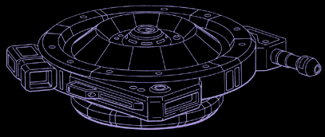 O gerador de antimatria a segunda pea mais pesada a bordo.
A tecnologia que deu surgimento ao DRCQ similar quela do transporte, CIE, SCI e outros dispositivos que manipulam matria em um nvel quntico. O processo de converso se d com a entrada de matria normal, esticada em pequenos filamentos de no mximo 0,000003 cm de dimetro. Os filamentos so alimentados sob presso para o DRCQ por suspenso magntica, onde so resfriados at 0,001 K, e expostos por um breve perodo a um campo de conteno, para reduzir ainda mais a vibrao molecular. Ao que o campo de conteno decai, campos subespaciais focados atuam profundamente na estrutura subatmica e mudam a carga e spin dos prtons, nutrons e eltrons congelados. A matria invertida, agora antimatria, removida magneticamente para ser armazenada. O sistema pode processar normalmente 0,08 m^3/h. Pode ser dito que a energia potencial total contida em uma certa quantidade de deutrio pode impulsionar uma nave por uma distncia considervel. Utilizar esta energia em velocidades subluz algo quase intil em um cenrio crtico. Vo interestelar a velocidades de dobra requer velocidades dezenas de milhares de vezes maiores do que as fornecidas pelo sistema de impulso, ento a gerao de antimatria se torna necessria. Uma desvantagem imposta pelo processo a de que ele requer dez unidades de deutrio para produzir somente uma unidade de antimatria. Colocando de outra forma, a lei da conservao da energia diz que a energia necessria para este processo vai exceder a energia utilizvel produzida pelo combustvel de antimatria resultante. No entanto, ela pode fornecer uma margem de sobrevivncia necessria para alcanar uma base estelar ou o ponto de encontro com um tanqueiro.
8. Operao e segurana Todo o hardware do sistema de propulso de dobra (SPD) vistoriado de acordo com a programao de monitoramento e troca baseada no tempo padro entre falhas (TPEF) da Frota Estelar. Devido a grande taxa de uso da cmara de reao matria/antimatria (CRM/A), todos os seus componentes foram desenhados para ter a mxima confiabilidade e altos valores de TPEF. Manuteno preventiva padro no feita no motor de dobra, j que o ncleo e os dutos de transferncia de fora s podem ser reparados numa doca ou base estelar equipada para efetuar reparos classe 5. Quando atracada a uma destas instalaes, o ncleo da USS Enterprise pode ser removido e desmantelado para a reposio de componentes tais como as bobinas de constrio magntica, reparos no revestimento interno de proteo, e inspeo e reparos automatizados nos dutos principais de combustvel. O ciclo padro entre grandes inspees e reparos do ncleo de 10.000 horas de operao. Enquanto o SPD est desligado, a tripulao da nave pode entrar nos injetores de matria e antimatria para a inspeo detalhada e substituio dos componentes. Os itens acessveis para manuteno preventiva (MP) no IMR so as vlvulas de entrada, condicionadores de combustvel, pr-aquecedores de fuso, bloco de compensao magntica, duto de transferncia, combinador de gs, cabea do bocal e o hardware de controle relacionado. Os itens acessveis dentro do IAR so os separadores de fluxo de antimatria e as vlvulas do injetor. Uma desmontagem parcial da estrutura de articulao do cristal de diltio (EACD) possvel durante o vo para inspeo por mtodos de teste no-destrutivo (TND). A cobertura protetora das superfcies internas pode ser removida e reaplicada sem a necessidade de parar em uma base estelar. Nos injetores, os atenuadores de impacto podem ser removidos e substitudos depois de 5.000 horas. Dentro das naceles de dobra, a maior parte das linhas de dados dos sensores e hardware de controle acessvel para inspeo e substituio. Com o ncleo desligado e o plasma sendo direcionado para fora da nave, o interior das bobinas de dobra fica acessvel para inspeo pela tripulao ou por dispositivos de controle remoto. Reparos nos injetores de plasma so possveis durante o vo, embora a sua substituio necessite do auxlio de uma base estelar. Da mesma maneira que em outros componentes, a cobertura de proteo interna pode ser substituda como parte do programa normal de MP. Enquanto em velocidades de subluz, a tripulao pode acessar a nacele atravs da escotilha de manuteno.
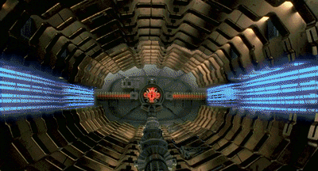 O interior de uma nacele de dobra pode ser visitado para manuteno.
A principal considerao de segurana na manipulao de deutrio no-tratado lquido o uso de uma roupa de proteo criognica para todo o pessoal trabalhando prximo a fluidos criognicos e semi-slidos. Todas as operaes de reabastecimento devem ser conduzidas por operadores remotos, a no ser que um problema se apresente e necessite da interveno da tripulao. O perigo principal na manipulao de criognicos envolve o congelamento do material em contato, mesmo no caso de roupas protetoras. O mximo cuidado deve ser tomado para evitar contato direto, e a manipulao do combustvel deve ser feita por ferramentas especializadas e ainda assim, somente no caso de emergncias.
9. Procedimentos de desligamento de emergncia A segurana operacional estritamente observada durante a operao do sistema de propulso de dobra. Os limites nos nveis de energia e tempo de uso em sobrecarga poderiam ser facilmente alcanados e ultrapassados, por isso, o sistema protegido pela interveno do computador, parte do processo de homeostase. Especialistas no fator humano desenharam o software operacional do SPD para que tome decises super protetoras nas questes de sade do motor de dobra. As decises do computador podem ser canceladas se as aes envolverem um nvel reduzido no controle da operao. A inteno no criar conflitos entre os humanos e o computador; pelo contrrio, a equipe de comando treinada para usar as rotinas do software ao mximo, obtendo uma maior eficincia da espao-nave. Desligamentos de emergncia so comandados pelo computador quando os limites de temperatura e presso ameaam a segurana da tripulao. O desligamento normal do SPD envolve o fechamento das vlvulas de plasma para as bobinas de dobra, fechamento dos injetores de reagentes e ventilao dos gases residuais para fora da nave. O sistema de propulso de impulso ir continuar a fornecer energia para a nave. Em um cenrio de desligamento, os injetores seriam fechados e o plasma ventilado simultaneamente. O sistema atingiria a condio de frio dentro de dez minutos. Grandes foras externas, tanto de objetos celestiais quando danos de combate, faro o computador calcular estatsticas de risco para os perodos de sobrecarga segura antes de comandar uma reduo na potncia do sistema ou mesmo o desligamento completo.
10. Procedimentos de emergncia durante falhas catastrficas Sob certas situaes de estresse, o SPD pode sofrer vrios graus de danos, normalmente de foras externas, e a maior parte deste dano pode ser reparada para trazer o sistema de volta condio de vo. No entanto, uma falha rpida, completa e irreparvel em um ou mais componentes do SPD constitui uma falha catastrfica. Os procedimentos normais para se lidar com danos de grande porte ao veculo se aplicam ao SPD e incluem, mas no esto limitados : garantir a segurana de outros sistemas que possam apresentar um perigo ainda maior nave; investigar o dano ao SPD e dano colateral s estruturas e sistemas adjacentes; efetuar o fechamento de brechas no casco e o isolamento de reas internas da nave que no possam mais ser habitadas. Alimentao de energia e combustvel fechada em pontos anteriores aos sistemas afetados, de acordo com as estimativas de dano do computador e da tripulao. Quando necessrio, membros da tripulao iro entrar em reas danificadas com roupas pressurizadas para garantir que os sistemas em questo esto totalmente inertes, e efetuar reparos (se necessrios) nos sistemas relacionados. Se o SPD for danificado em combate, a tripulao pode reforar seus uniformes pressurizados com camadas flexveis mltiplas de proteo contra vazamentos imprevisveis de energia. A equipe de engenharia pode resolver adiar os reparos at um momento em que a nave possa evitar ainda mais danos. As aes especficas de reparo no hardware do SPD vo depender de cada situao. Em alguns casos, o hardware danificado ejetado, embora consideraes de segurana peam que o equipamento seja retido sempre que possvel. No caso de todos os procedimentos normais de emergncia (incluindo um escudo de fora de segurana com mltiplas camadas em volta do ncleo) falharem em conter um dano macio ao SPD, duas aes finais so possveis. Ambas envolvem a ejeo completa do ncleo central do SPD, com a possibilidade da ejeo do conjunto de tanques de armazenamento de antimatria. A primeira opo o incio proposital e manual da seqncia de ejeo; a segunda opo a ativao automtica pelo computador. 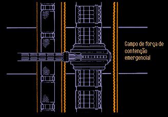 Um poderoso campo de fora cerca o ncleo no caso de uma brecha.
A ejeo do ncleo ir ocorrer quando o dano cmara pressurizada for to grande que possa romper o campo de fora de segurana. A ejeo do ncleo tambm ir ocorrer se o dano for grande o suficiente para sobrecarregar o sistema de integridade estrutural a tal ponto que ele no possa mais conter o ncleo, independente de o ncleo estar ou no fornecendo energia de propulso. A sobrevivncia da tripulao e o restante da espao-nave so, na maior parte dos casos, consideradas prioridade sobre a operao do ncleo. Se o sistema de propulso de impulso estiver operante, a movimentao da nave ainda possvel, aumentando as chances de sobrevivncia. Procedimentos especficos relacionados a cada cenrio programado no computador iro sugerir as aes a serem tomadas at o momento do resgate da tripulao. Durante situaes de combate, o ncleo receber o comando para se auto-destruir assim que uma distncia segura for atingida pela tripulao. Danos sofridos pelo conjunto de tanques de armazenamento de antimatria podem forar a sua ejeo imediata da seo de engenharia. J que o suprimento de antimatria reagente possui a energia potencial para vaporizar toda a nave, sistemas de segurana multiplamente redundantes esto instalados na rea para minimizar as condies de falha dos dispositivos de conteno. Falhas de sistemas ou estruturais seriam, como no caso do ncleo, analisadas pelo computador e poderiam resultar no lanamento do conjunto completo para longe da nave.A opo de ejeo manual, embora esteja programa nas rotinas de emergncia do computador, no normalmente considerada til numa situao de crise, devido principalmente aos limites de tempo relacionados aos eventos de fechamento das vlvulas e transferncia do combustvel restante nos dutos de alimentao.
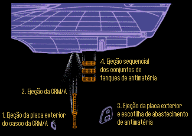 Todo o SPD pode ser ejetado em emergncias.
Notas da produo, por Rick Sternbach e Michael Okuda Descobrir o quo rpido as vrias velocidades de dobra so foi bastante complicado, e no apenas do ponto de vista cientfico. Primeiro, ns tivemos que satisfazer a expectativa dos fs de que a nova nave era significantemente mais rpida do que a original. Segundo, ns tivemos que trabalhar com a recalibragem de Gene (Roddenberry), que colocava a dobra 10 no topo absoluto da escala. Estes primeiros dois obstculos foram relativamente simples, mas ns descobrimos rapidamente que era fcil fazer as velocidades de dobra MUITO rpidas. Acima de uma certa velocidade, ns descobrimos que a nave seria capaz de atravessar toda a galxia numa questo de meses (fazer a nave rpida demais iria tornar a galxia um lugar muito pequeno para o formato de Jornada nas Estrelas). Por ltimo, ns tnhamos que deixar algum atalho para vrios aliens poderosos como o Q, que parece ter um gosto por jogar a nave a milhes de anos luz de distncia no tempo de um intervalo comercial. Nossa soluo foi redesenhar a curva de dobra de tal maneira que o expoente do fator de dobra cresa gradualmente, e ento faa um pico ao se aproximar de dobra 10. Em dobra 10, o expoente (e a velocidade) seria infinito, ento voc nunca poderia alcanar este valor (O Michael usou uma planilha do Excel para calcular as velocidades e tempos). Isto permite ao Q e seus amigos se divertirem na faixa de 9,9999+, e ainda deixa nossas naves viajando devagar o suficiente para manter a galxia um lugar grande. A propsito, ns estimamos que em "Where No One Has Gone Before o Viajante estava impulsionando a Enterprise a mais ou menos dobra 9,9999999996. Ainda bem que no havia muito trnsito naquele dia. Logo cedo na srie o Patrick Stewart veio para ns e perguntou como o sistema de dobra funcionava. Ns explicamos algumas das idias tericas expostas neste artigo, mas informamos que tal dispositivo est muito alm da fsica atual. Ns enfatizamos que ningum tinha nenhuma idia real de como fazer uma nave ir mais rpido do que a luz. Besteira, disse o Patrick. Tudo que voc tem que fazer dizer. Acionar. E ele tinha razo... Ok, os valores de dobra atuais so teoricamente muito mais rpidos do que os alcanados pela Entrevista original na primeira srie, mas a dobra 1 antiga e a nova so a mesma (a velocidade da luz). A dobra 6 antiga mais ou menos dobra 5 na escala nova. A (na poca) espetacular velocidade de dobra 14,1, alcanada pela Enterprise original com extremo esforo em Is There in Truth No Beauty?, agora prxima de dobra 9,7, que a nova nave atingiu enquanto fugia do Q durante "Encounter at Farpoint. Falando no episdio piloto, o estdio pensou inicialmente que seria feito pouco uso da sala de engenharia nesta nova Enterprise. Na verdade, ns no havamos planejado construir o set para o primeiro episdio. O problema que a natureza da televiso diz que muito provavelmente o set nunca seria construdo, se no fosse feito durante o piloto. Quando o Gene Roddenberry descobriu esta omisso, ele escreveu imediatamente uma cena que se passa na sala de engenharia, justificando o gasto enorme para constru-la durante Encounter at Farpoint. A maior parte dos privilegiados visitantes ao nosso set da sala de engenharia fica completamente impressionada com a sensao de estar realmente a bordo da Enterprise. Mesmo assim, algo fica sempre faltando. Este algo o quase subliminar som de fundo adicionado atravs de efeitos sonoros. O expectador quase nunca est consciente dele, mas a vibrao bem baixa caracterstica da sala de engenharia ou o som dos instrumentos na ponte so uma parte importante do estar realmente l. Os efeitos sonoros em A Nova Gerao so o campo da produtora associada Wendy Neuss. Sob a superviso do co-produtor Peter Lauritson, Wendy coordena a mgica (ganhadora de vrios prmios Emmy) do editor de som Bill Wistrom, do editor de efeitos sonoros Jim Wolvington e do editor assistente de efeitos sonoros Tomi Tomita. A criao de muitos efeitos sonoros da Enterprise foi supervisionada tambm pelo criador da srie Gene Roddenberry, junto com Rick Berman, Bob Justman e Brooke Breton. Estes efeitos sonoros so normalmente o resultado de processamento digital extensivo, mas muitos so baseados em fontes surpreendentemente mundanas. Apesar da tecnologia avanada disposio, nosso pessoal de som normalmente prefere comear com sons naturais, gravados acusticamente, porque eles acreditam que a harmonia resultante muito mais rica e interessante do que tons puramente sintetizados. O som de fundo da ponte inclui por exemplo, o som bastante alterado da vibrao de um ar-condicionado. O sweesh caracterstico da abertura das portas baseado no som de uma pistola sinalizadora com um pouco de rangido do tnis do Jim Wolvington no piso da Mordern Sound. A maior parte dos sons da Enterprise parecida com os sons da srie original, e isto feito de propsito. Alguns, como os comunicadores e os phasers da nave so exemplos de sons originados na primeira srie. Sons aliengenas vm de fontes variadas, como a voz dos Binrios (de 11001001/11001001) que foi construda inserindo pequenas amostras da voz das atrizes em um Synclavier, e depois os tocando com uma cadncia muito mais rpida do que a voz humana normal. Os sons do interior do Tin Man foram baseados no som do estmago do Wolvington, gravado atravs de um estetoscpio. Wolvington diz: Eu no contei pra ningum de onde vinha aquele som at a finalizao do episodio porque eu no queria que ningum ficasse enjoado!. O coletor Bussard foi utilizado em pelo menos dois episdios, Samaritan Snare e Night Terrors. Em ambos os casos, o fluxo do sistema foi invertido para que gs de hidrognio ou plasms flusse para fora dos coletores (ao invs de para dentro, como aconteceria normalmente). No primeiro uso, o resultado foi um espetacular (embora inofensivo) show pirotcnico. Durante Night Terrors, o fluxo de hidrognio foi usado para tentar fechar uma perigosa fenda espacial. O conceito de usar campos eletromagnticos para coletar hidrognio interestelar foi sugerido pela primeira vez pelo fsico Dr. Robert W. Bussard ainda nos anos 60. |